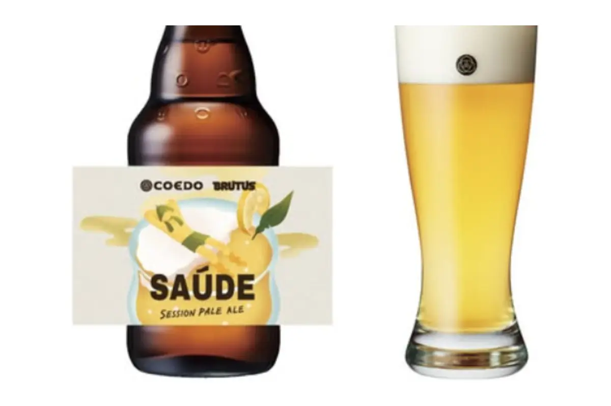

食・農 / 健康・スポーツ / サウナ
BRUTUS×COEDO『SAÚDE（サウージ）』

PROJECT INFORMATION
商品ページを見る ↗（新しいタブで開く）BRUTUSのサウナ特集号を記念した、COEDO BREWERYとのコラボレーションビール。サウナのあとの一杯として味から設計し、ネーミングとデザインを担当しました。
01 / 背景とテーマ
輪郭を与える
サウナのあとに何を飲むか。その定番はあっても、サウナのためにつくられた一杯はありませんでした。BRUTUSのサウナ特集「サウナ、その先の楽園へ。」を記念して、サウナーとして活動する橋本を中心に、サウナ×ビールの新しい価値を探るところから始めたプロジェクトです。
02 / SCHEMAの担当範囲
全体を整える
SCHEMAは企画・設計とアートディレクションを担当。ポルトガル語で「乾杯」と「健康」の両方を意味する「SAÚDE（サウージ）」をネーミングに採用しました。SAUNAを連想させる文字でもあるため、まだ世の中にない味を言葉のほうから立ち上げています。ラベルは、サウナとビールの心地よさを直感的に想像できるグラフィックにまとめました。
03 / 取り組みの視点
枠組みをひらく
中身は柚子粉を使ったセッション・ペールエール、アルコール4.0%。ととのった後の余韻に浸りながらゆっくり飲むことを前提に、ぬるくなっても美味しく、温度の変化で味わいが移り変わるよう設計されています。急いで飲み干す飲み物という前提を外すことで、ビールの新しい可能性をひらいた取り組みです。